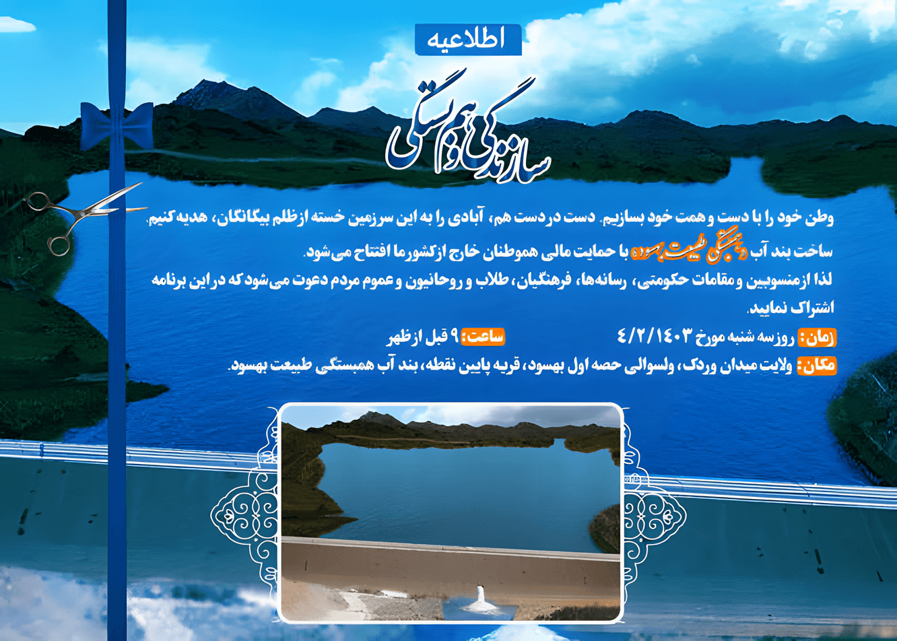

پروژه آب بند همبستگی طبیعت بهسود
Behsood Nature-Solidarity Water Dam Project
پروژه آب بند همبستگی طبیعت بهسود با تلاشهای خستگی ناپذیر آقای دوکتور نثار و تیم همکار ایشان و به حمایت سخاوتمندانه دوستان روی دست گرفته شده و امیدوار هستیم که دوستان خیر اندیش تا تکمیل شدن این پروژه بنیادی و ملی از هیچگونه کمک و همکاری دریغ ننمایند
The Behsood Nature-Solidarity Dam project was undertaken thanks to the tireless efforts of Dr. Nisar and his team, with the generous support of friends and donors. We hope that all our friends, donors and well-wishers will spare no help and cooperation until the completion of this fundamental national project.
 بازتاب پروژه آب بند همبستگی طبیعت بهسود در خبر های جهانی افغانستان انترنشنال
This is a test thing